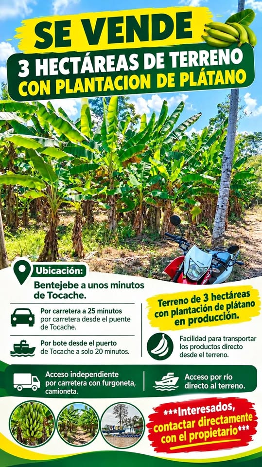

PEN72 3 ha

SE VENDE 3 HECTÁREAS DE TERRENO CON PLANTACIÓN DE PLÁTANO 📍 Ubicación Bentejebe a unos minutos de Tocache. 🚗 Por carretera: 25 minutos por carretera desde el puente de Tocache. 🚤 Por bote: Desde el puerto de Tocache a solo 20 minutos. 🌱 Terreno Terreno de 3 hectáreas con plantación de plátano en producción. 🍌 Facilidad para transportar los productos directo desde el terreno. 🚚 Accesos Acceso independiente por carretera con furgoneta, camioneta. 🚤 Acceso por río directo al terreno. 📞 Contacto [hidden information] Interesados, contactar directamente con el propietario